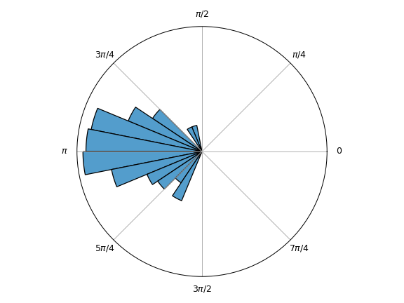

systole.circular¶
-
systole.circular(data, bins=32, density='area', offset=0, mean=False, norm=True, units='radians', color=None, ax=None)[source]¶ Plot polar histogram.
- Parameters
- dataarray-like or list
Angular values, in radians.
- binsint
Use even value to have a bin edge at zero.
- densitystr
Is the density represented via the height or the area of the bars. Default set to ‘area’ (avoid misleading representation).
- offsetfloat
Where 0 will be placed on the circle, in radians. Default set to 0 (right).
- meanbool
If True, show the mean and 95% CI. Default set to False
- normboolean
Normalize the distribution between 0 and 1.
- unitsstr
Unit of the angular representation. Can be ‘degree’ or ‘radian’. Default set to ‘radians’.
- colorMatplotlib color
The color of the bars.
- axMatplotlib.Axes instance | None
Where to draw the plot. Default is ´None´ (create a new figure).
- Returns
- axMatplotlib Axes instance
Axes object with the plot.
Notes
The density function can be represented using the area of the bars, the height or the transparency (alpha). The default behaviour will use the area. Using the heigth can visually biase the importance of the largest values. Adapted from: https://jwalton.info/Matplotlib-rose-plots/
Examples
Plot polar data.
import numpy as np from systole.circular import circular x = np.random.normal(np.pi, 0.5, 100) circular(x)
